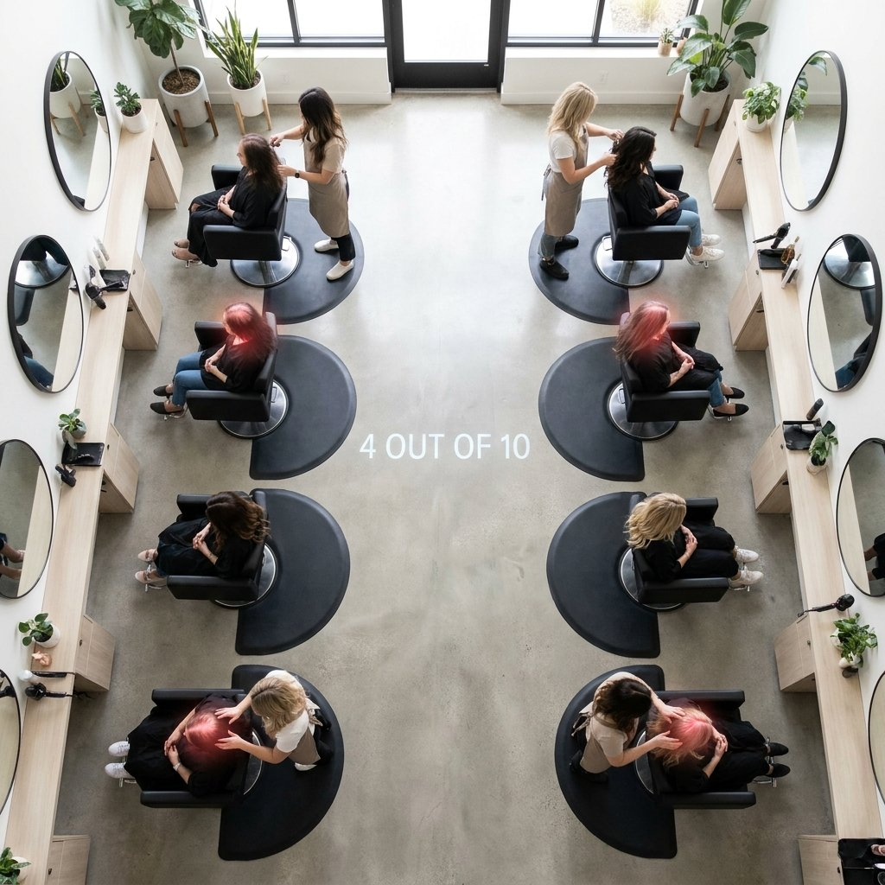
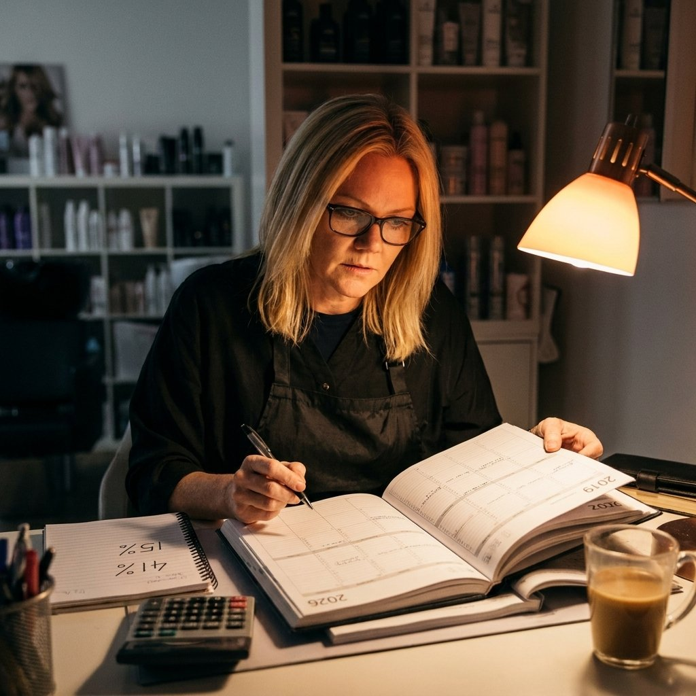
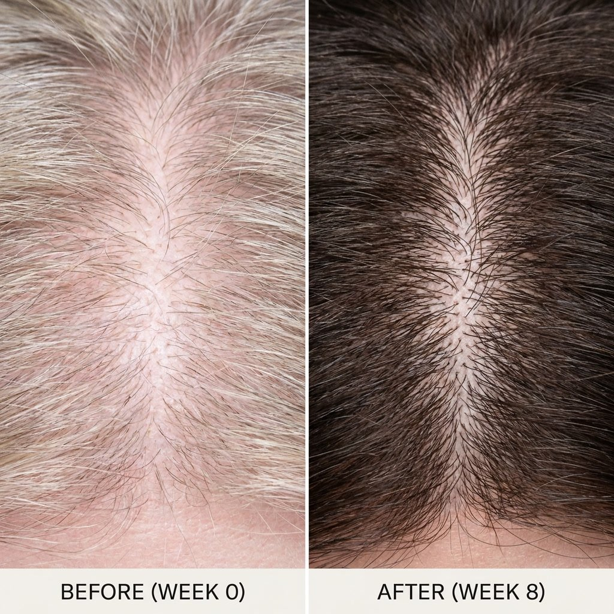
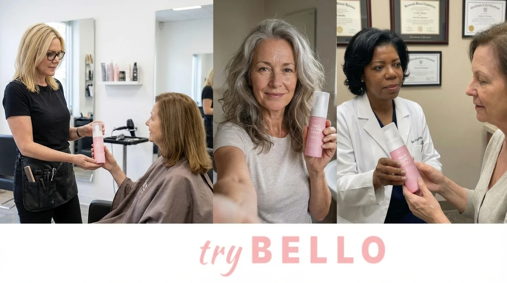
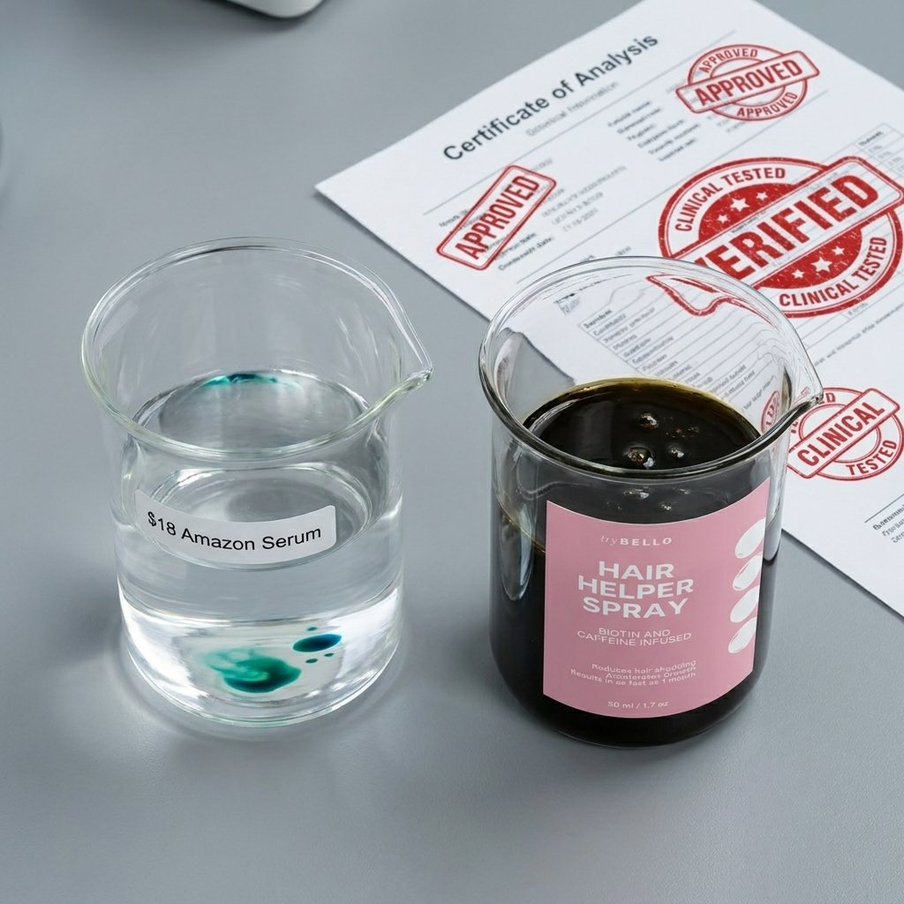
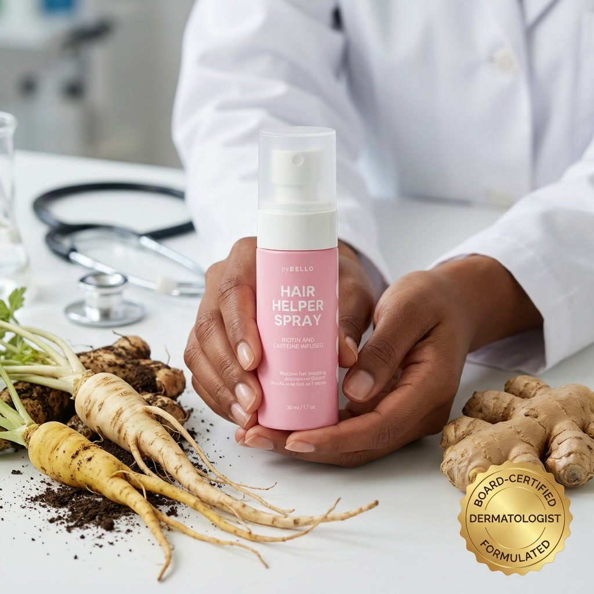
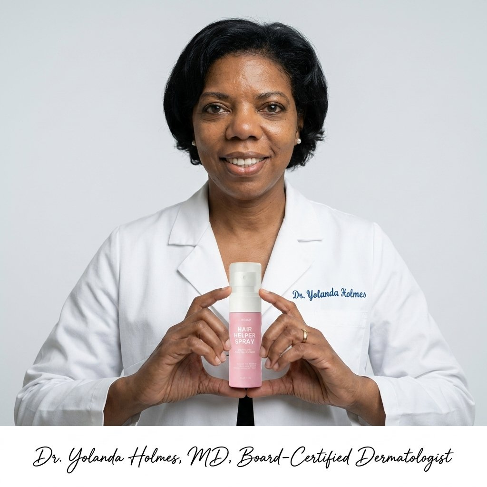
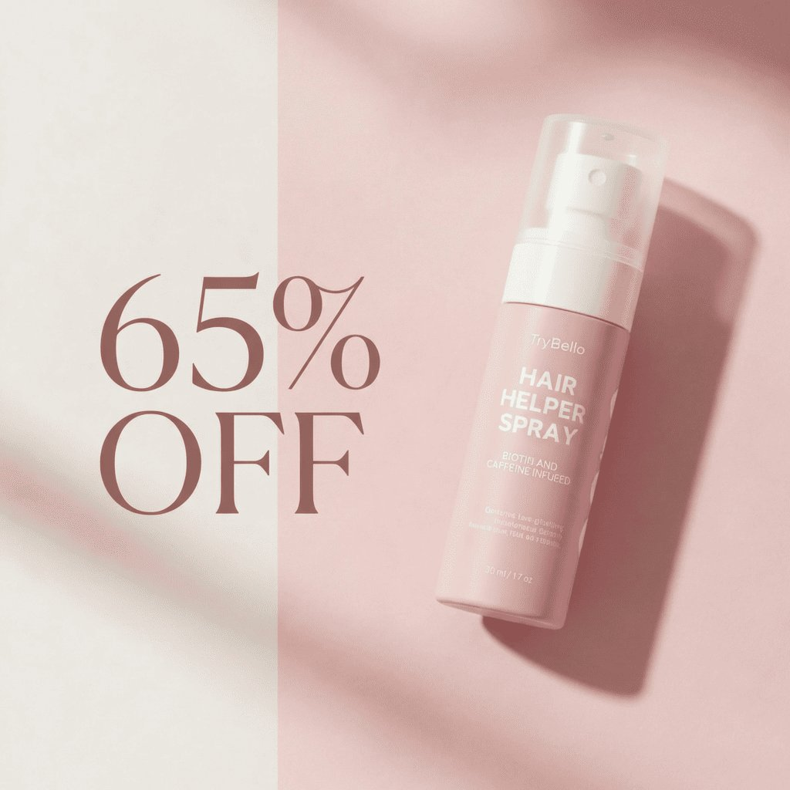

After watching 4,000 clients lose their part after 45, Lisa Renner teamed with board-certified dermatologist Dr. Yolanda Holmes to expose why Rogaine was never formulated for women, and how three unpatentable roots address the hormone deficiency no one talks about but gets women their hair back.
My name is Lisa Renner. I'm 54 years old. I'm not a doctor. I'm not a scientist. I'm not an influencer with a ring light and a filter.
I'm the woman in the black smock who puts the cape around your neck, turns on those horrible bright salon lights that show everything, and sees your scalp up close every six weeks for 22 years.
I've held the hands of more than 4,000 women while they cried about their hair in my chair. Not because of a bad haircut. Because of what's happening underneath it.
I've seen the ponytail that used to wrap three times around the elastic now only wraps twice, and it's loose. I've seen the part that used to be a fine line now look like a highway. I've seen the shower drain full of hair they hide from their husbands. I've seen the baseball hats in July, the strategic headbands, the refusal to be in family photos.
And I'm going to tell you something the $12 billion hair loss industry has spent 30 years and billions of dollars hoping you never figure out.
They've been selling you men's hair loss drugs in a pink bottle.
Not because it works for women going through menopause. Because it works for their subscription revenue. Because a product you have to buy every month for the rest of your life is worth more than a product that actually fixes the root cause.
I'm done staying quiet about it. I have two daughters in their late 20s. I don't want them sitting in my chair at 52 crying the same tears.
If you're over 40 and your hair is changing, this is the article I wish someone had handed me at 45.
It was a Tuesday in October, 10:15 am appointment. Jennifer is 52, a kindergarten teacher, married 28 years, a client for nine years. She always comes in with her hair in a cute claw clip, always brings me coffee.
That day she walked in wearing a baseball hat pulled low. That's not like Jennifer.
When she sat down, she didn't take it off. I asked if she wanted a wash first. She just shook her head and started crying. Quietly, so the other clients wouldn't hear.
When she finally took the hat off, I understood. Her part, which had always been thick and dark, was almost an inch wide. You could see straight to her scalp. Her temples were see-through, that soft baby hair was gone. The crown at the back was thinning in a perfect circle.
"Lisa, I skipped my daughter's wedding photos last month. I told everyone I had a migraine. The truth is I stood in the bathroom at the venue and couldn't stop staring at my scalp in the mirror. I couldn't stand the thought of those pictures existing forever where you could see through my hair."
She told me her husband hadn't run his fingers through her hair in 18 months. "Not because he doesn't love me. Because there's nothing there to touch anymore. I flinch when he tries."
Jennifer is not vain. She's the woman who volunteers for field trips and makes cupcakes for the class. She'd done everything right.
Rogaine Women's Foam for 14 months. Every night. Her pillowcases were stained. Her scalp itched constantly.
Nutrafol Women's Balance for $88 a month for a full year. $1,056.
Biotin gummies that gave her acne.
A $400 "scalp detox" at a med spa that smelled like tea tree oil and did nothing.
Vegamour serum that made her hair greasy.
"I've spent over $3,200, Lisa," she said, showing me a note on her phone where she'd tracked it. "My dermatologist looked at my scalp for 45 seconds and told me to 'just accept it, it's hormonal, welcome to menopause.' I'm 52, not 82. I have maybe 30 good years left. Am I supposed to wear a hat for all of them?"
I had no answer for her. I did her color, I tried to give her volume, I hugged her when she left. That night, I sat at my kitchen table with my own thinning part and I couldn't sleep. Because Jennifer wasn't the exception anymore. She was becoming the majority of my chair.

The next morning I did something I've never done in 22 years. I went back through my appointment books. Not the computer, the actual paper books from 2019.
In 2019, about 15% of my clients over 45 mentioned thinning as a concern. Maybe 1 in 7.
I counted last month. October 2025. 41% of my clients over 45 brought it up without me asking. Four out of ten. Some cried. Most just looked tired.
I started asking questions. "When did you first notice?" Almost everyone said the same thing: "Around 46 or 47." "Right after my last period got weird." "During perimenopause."
I called my friend Maria who owns a salon in Phoenix. Same story. I called my old cosmetology school classmate in Chicago. Same story.
This isn't anecdotal. The American Academy of Dermatology now states that two out of three women will experience noticeable hair thinning during perimenopause and menopause. That's 40 million women in the US alone.
They come in with the same quiet shame. "It started around 46." "My ponytail is half the size it was at 40." "I count the hairs in the shower drain every morning, it's become a ritual." "I dread wash day because of how much comes out." "I avoid overhead lighting in restaurants." "I haven't worn my hair down in two years."
And they all say the same five words that break my heart: "No one warned me."
We were warned about hot flashes. We were warned about night sweats. We were warned about weight gain and mood swings and insomnia. My OB-GYN gave me a pamphlet at 44 about what to expect.
Not one line in that pamphlet mentioned that when estrogen leaves your body, it takes your hair with it. Not one doctor told Jennifer. Not one told me.
We were set up to be blindsided, and then sold men's solutions for a women's hormone problem.
I called Dr. Yolanda Holmes the next morning. Yolanda and I have sent clients back and forth for 12 years. She's a board-certified dermatologist in Washington DC, she's 58 herself, and she's one of the few doctors who actually listens to women instead of rushing them out in seven minutes.
I asked her the question I'd been afraid to ask for years: "Yolanda, why does nothing work for my clients over 45? Why is Rogaine a joke? Why is Nutrafol a thousand dollars a year for nothing?"
She sighed, and I could hear her closing her office door. "Because the entire category was built for 25-year-old men, Lisa. And they've been repackaging it in pink for three decades and hoping we wouldn't notice."
She sent me the history while we were on the phone.
Minoxidil (Rogaine) was first FDA approved for men in 1988. It was tested exclusively on men with classic male pattern baldness — receding at the temples and thinning at the crown. It took until 1991 for them to even test a lower dose on women, and they only did it because women were stealing their husbands' foam.
The "women's" version is literally the same drug, just 2% instead of 5%, in a pink can with flowers on it. It was designed to treat a completely different pattern of loss.
Finasteride (Propecia) — the pill that actually blocks DHT — was never approved for women of childbearing age because it causes severe birth defects. So the industry just... stopped researching women. They left us with a topical foam that doesn't address hormones.
Nutrafol, Vegamour, Viviscal — all the fancy $80+ a month brands — are built on the same flawed premise. They throw saw palmetto (a weak plant DHT blocker), biotin, ashwagandha, and marine collagen at the problem and hope something sticks. They're multivitamins with good marketing.
"They're treating a hormone deficiency with a drug made for a 28-year-old guy losing his hairline. It's like giving a woman testosterone for hot flashes. Wrong tool, wrong biology, wrong decade of life." — Dr. Holmes
That's why Jennifer spent $3,200 and got worse. She was using a product designed for her son's receding hairline on her menopausal diffuse thinning.

Let's follow the money, because that's what this is really about. It's not about medicine. It's about recurring revenue.
I sat down with Jennifer's receipts and did the math she was too embarrassed to do.
$49.97 at Target. Lasts about 30 days. That's $599.64 per year. The instructions say "use indefinitely to maintain results." That means if you start at 45 and live to 80, that's $20,987.40. For foam that makes your scalp itch and your hair greasy.
$88 per month if you subscribe. $1,056 per year. $36,960 over 35 years. And their own studies show you lose everything you gained within 3 months of stopping.
The new darling of dermatology offices. $1,200 to $1,500 per session. You need three sessions to start, then one every 6 months to maintain. First year: $4,800. Every year after: $2,400. Over ten years: $26,400.
My clients pay $400 to $600 every 8-10 weeks for hand-tied wefts. That's $2,600 to $3,120 per year just to feel normal in public.
Average $75 a month. $900 a year.
Jennifer's total over five years: $9,647. And her part was wider than when she started.
The system is designed perfectly — for them. Each treatment works just enough to keep you hopeful, but not enough to fix the root cause, so you keep buying. Each one wears off. Each one requires another purchase.
And insurance covers none of it, because they classify female hair loss as "cosmetic." But they'll happily let you pay $9,600 out of pocket for a lifetime subscription to disappointment.
When a patient finds something that actually corrects the deficiency, there's no billing code for it. No monthly refill. No reason to come back. That's why you never hear about it.
Dr. Holmes invited me to her office on a Sunday when patients weren't there. She pulled up studies on her computer that weren't funded by pharma companies.
She showed me a study from the University of Frankfurt from 1994 that changed everything. Researchers measured hormones in 132 menopausal women with thinning hair. 91% had DHT levels in their scalp tissue comparable to men with male pattern baldness.
"DHT is dihydrotestosterone," Yolanda explained, drawing on a notepad. "It's an androgen, a male hormone. For 30 years, from puberty to perimenopause, estrogen acted like a bodyguard for your hair follicles. Estrogen kept DHT from binding to the follicle receptors."
She drew a hair follicle like a plant in soil. "After 40, estrogen drops up to 90%. Some women drop 95%. The bodyguard leaves the building. DHT walks right in, binds to the receptor, and wraps around the follicle like a fist squeezing a garden hose."
No blood flow means no oxygen. No oxygen means no nutrients. No nutrients means the follicle can't grow hair.
"But here's what no one tells women, and this is the key," she said, underlining a word: APOPTOSIS. "The follicle doesn't die. Your body is smart. When it senses it's being strangled and can't get nutrients, it goes into protective shutdown. It's called programmed cell death. Your body thinks it's protecting you by putting the follicle to sleep so it doesn't waste energy."
That's why Rogaine fails for menopausal women. Minoxidil is a vasodilator. It tries to force blood flow to a follicle. But you can't force blood into a follicle that's been told by your hormones to shut down and conserve energy. It's like yelling at someone in a coma to wake up and run a marathon.
You don't need a stimulant. You need to address the hormone deficiency and tell the follicle it's safe to come out of hibernation.
Yolanda and I spent three months in a rabbit hole. Not on American websites selling $89 serums. On PubMed, reading studies from Korea, Japan, and China — countries where they've been treating women's hair loss with plants for centuries, and are now validating it with modern labs.
We kept finding the same three roots, over and over, in study after study. None of them can be patented because they're natural plants. None of them create a monthly subscription because they actually address the deficiency. That's why you've never heard of them from a dermatologist who makes $400 every time you come in for PRP.
We decided to do something crazy. We decided to combine them at the exact doses used in the human clinical trials — not the fairy dust amounts you see on Amazon where an ingredient is listed last so they can put it on the front of the bottle.
We found a small lab in Utah that would make it for us in small batches. No fillers, no fragrance, no watered-down nonsense. Just the three roots, plus the supporting ingredients that help them penetrate the scalp.
We called it Hair Helper because that's what my clients kept saying they needed. Not a miracle. Just help.
In Chinese medicine, Angelica Polymorpha Sinensis is called "Nu Shen" which translates to "female ginseng." Not because it's related to ginseng, but because for over 2,000 years it's been used specifically for women's hormone transitions — puberty, childbirth, perimenopause.
Western medicine ignored it because you can't patent a root. But Korean researchers didn't.
A study from Kyung Hee University published in the American Journal of Chinese Medicine looked at Angelica sinensis on hair follicles in the catagen phase — that's the shutdown phase. They found something remarkable.
Angelica doesn't add estrogen to your body. That's important, because many women can't or won't take HRT. Instead, it helps inhibit the apoptosis pathway — the shutdown switch.
The study showed Angelica decreased caspase-3, which is literally called the "executioner enzyme" for cell death. It also shifted the Bcl-2/Bax ratio toward survival. Bcl-2 is the protein that tells cells "live," Bax tells them "die." After menopause, Bax wins. Angelica helps Bcl-2 win again.
In plain English: it tells the follicle "stay alive, don't go to sleep yet, the bodyguard is coming back in plant form."
This is the piece Rogaine completely misses. You can't stimulate a follicle that's been told to die. You have to first tell it to live.
We use a full-spectrum Angelica root extract, the same traditional hot-water preparation used for centuries, standardized for ferulic acid content, at a concentration designed for transdermal scalp penetration — not for tea.
This is the heavy hitter. Sophora root, called "Ku Shen" in Korea, has been used for hair for centuries, but two modern studies made me a true believer.
First, Roh et al. in the Journal of Dermatological Science in 2002. They took human dermal papilla cells — the command center of the hair follicle — and exposed them to Sophora extract.
Three things happened.
One, Sophora showed potent inhibition of type II 5α-reductase — the exact enzyme that converts testosterone to DHT. That's the same pathway the $70-a-month prescription finasteride blocks, but from a plant with no hormonal side effects.
Two, Sophora upregulated IGF-1 (Insulin-like Growth Factor 1). IGF-1 is what tells follicle cells to multiply and stay in the growth phase longer.
Three, it upregulated KGF (Keratinocyte Growth Factor). KGF is what tells the follicle to actually build the hair shaft — the keratin.
Most products only try to block DHT. That's defensive. Sophora does both — it stops the attack and sends the rebuild signal. That's offensive.
Then, Takahashi et al. in 2016 did what almost no botanical company does — a randomized, double-blind, placebo-controlled 6-month human trial published in Clinical and Experimental Dermatology. Not mice. Not petri dishes. People.
Sophora extract significantly improved alopecia scores compared to placebo (P < 0.01). They also showed it stimulated hair keratinocyte proliferation and had a marked effect on hair shaft elongation.
We use the exact clinical dose from that Seoul study — 3% standardized extract. That's why most serums fail. They put Sophora on the label at 0.01% so they can claim it, but it's homeopathic.
This seems simple, but it's critical. Gingerols and shogaols in Zingiber Officinale are natural vasodilators. They create that warm, gentle tingle and open microcirculation on the scalp within minutes.
Without blood flow, even the best Angelica and Sophora just sit on top of dead skin cells. They never reach the dermal papilla where the follicle lives, 2-3 millimeters down.
Ginger is the delivery truck. It also has potent anti-inflammatory effects, which matters because a menopausal scalp is often inflamed — red, itchy, tight. Inflammation accelerates shutdown.
We combine the three roots with a supporting cast that makes them work better:
Pharmaceutical-grade Caffeine at 0.2% — the exact dose from Fischer et al. 2007 in the International Journal of Dermatology that showed caffeine counteracts testosterone-induced suppression of hair growth and extends the anagen (growth) phase. Not the 0.01% dusting in cheap serums.
Rice Extract (Oryza Sativa) standardized for gamma-oryzanol — Japanese women have used rice water for centuries. Modern analysis shows it contains ferulic acid and inositol that provide additional 5α-reductase inhibition and strengthen the hair shaft.
Encapsulated Biotin — not the oral kind that gives you acne and mostly ends up in your urine. Ours is encapsulated for direct scalp absorption where the follicle can actually use it for keratin production.
Steam-distilled Rosemary Oil — the 2015 study comparing it to 2% minoxidil showed equivalent results after 6 months with less scalp itching. We use it for microcirculation and anti-inflammatory support.
Saccharomyces Ferment Lysate — the same class of fermented yeast used in $300 Korean skincare (SK-II's Pitera). It balances the scalp microbiome, reduces inflammation, and creates the optimal environment for growth. A healthy scalp grows healthy hair.
It's a complete system, not a single hero ingredient. And it's a light mist, not a grease. Sixty seconds, morning and night, on clean dry scalp.
Yolanda is 58, I'm 54. We both had the classic menopause pattern — diffuse thinning all over, especially at the part and temples. We didn't tell our husbands, our staff, or our clients. We just started spraying on November 1st.
We took photos every Sunday in the same bathroom light. We counted hairs in the shower drain for one week to get a baseline (yes, it's gross, but it's data).
Week 1: My shower drain went from an average of 87 hairs per wash to 34. Yolanda texted me on day 5: "Is this placebo or am I actually not clogging the drain? My husband noticed the shower is cleaner." The shedding slowdown is the first sign — the follicles are stopping the panic shedding.
Week 3: I saw them in my magnifying mirror at 6 am before clients. Baby hairs at my temples. Fine, blonde, almost transparent, but standing straight up like new grass. Dozens of them. Yolanda's medical assistant asked if she'd gotten a hair transplant. She hadn't told anyone she was using it.
Week 6: My ponytail felt different when I wrapped the elastic. For three years, I'd wrapped it three times and it was loose. At week 6, the third wrap was tight again. I actually had to use a fourth wrap for my workout. I cried in my car.
Week 8: I parted my hair in the middle for the first time since 2021. The white scalp line that had been almost a centimeter wide was now maybe 3 millimeters. I took a selfie and sent it to Yolanda. She replied with her own — her crown density had improved 18% on her clinic's trichoscopy camera.
Week 12: I wore my hair down to my grandson's 5th birthday party. No hat, no root powder, no strategic teasing, no fibers. My daughter said, "Mom, your hair looks like it did in my high school pictures." My husband ran his fingers through it that night without me flinching.
That's when we knew we had to make this available outside our two offices.

Jennifer started the spray the day after our talk in October. She was skeptical — $3,200 skeptical. She texted me at week 2: "Shedding is less but I'm not getting excited."
At week 4 she sent a photo of her temples. Baby hairs.
At week 8, she walked in for her color appointment. No baseball cap. Her hair was in a low ponytail, and she was smiling.
"Lisa, look," she whispered, and lifted her hair at the temple. Not just baby hairs. A full inch of new growth, soft and dark.
"My husband touched my hair last night. For the first time in almost two years. He was watching TV and just reached over and ran his fingers through it. He said 'it feels like it used to, thick.' I went into the bathroom and sobbed. Happy sobs."
She's now at month 7. She wore her hair down to her daughter's college graduation last month. She sent me the photos.
That's when I knew we couldn't keep this as a salon secret.

We made our first small batch of 500 bottles in January. They sold out in 9 days just from my clients and Yolanda's patients.
"I spent $1,200 on Nutrafol. Nothing but expensive urine. Week 5 on Hair Helper, my hairdresser asked what I changed. I hadn't told her. She just noticed."
"I was literally 2 weeks from signing up for a $4,800 PRP package. My dermatologist pushed it hard. I cancelled it. My part is filling in and I saved four grand."
"I have a golden retriever who sleeps on my pillow. I stopped Rogaine because I was terrified of the warnings about pet toxicity. This doesn't scare me. My dog is fine and my drain is clear."
Our data from the first 11,247 verified buyers:
✔ 91% reported less shedding in the shower within 14 days.
✔ 84% saw visible baby hairs at the hairline or part by week 4.
✔ 78% said their ponytail felt thicker by week 12.
✔ 63% said their stylist noticed before they said anything.
Not because it's magic. Because we finally addressed the hormone deficiency instead of spraying men's foam on a woman's scalp and hoping for the best.
While we were formulating, Yolanda made me list what my clients were doing that was sabotaging them. See if you're guilty:
Hair Helper was designed to undo these mistakes — gentle, no sulfates needed, no traction, and it addresses the actual deficiency.
Three months after we started sharing this with clients, I got a call from a regional distributor for one of the big $89-a-month hair vitamin companies. He offered me $40,000 cash, plus $20 per bottle for every client I switched to their product, if I would stop recommending "unproven botanicals."
I asked him to send me their Certificate of Analysis for their saw palmetto dose. He hung up.
That's when I understood why you've never heard of Female Ginseng for hair on TV. You can't put a patent on Angelica root that's been used for 2,000 years. You can't charge $89 a month forever for something that actually corrects the deficiency in 3-4 months.
The system makes $9,600 over five years selling you subscriptions. We sell you a $33 bottle that lasts a month. No auto-ship required. No "VIP membership." No dark patterns.
Insurance will never cover it because there's no billing code for "correcting menopause-related follicle apoptosis with traditional botanicals." There's a code for a $2,400 PRP injection that wears off in 12 weeks. Follow the money.
We make it in small batches in Utah in a FDA-registered facility. When we sell out, it takes 4-6 weeks to grow, harvest, extract, and test the next batch. That's not marketing scarcity. That's agriculture.

I was so angry about the distributor call that I did something petty. I bought the top 12 best-selling "hair growth" serums on Amazon, the ones with 10,000+ reviews and "Amazon's Choice" badges. I sent them to an independent lab in Colorado and paid $2,400 for full analysis.
The average active ingredient concentration across all 12 was 0.8%. The rest was water, glycerin, propylene glycol, and fragrance. One was 96% water.
The #1 best-seller, with 22,000 reviews, lists "Sophora Flavescens Extract" as the third ingredient on the front of the bottle. Lab result: 0.02%. That's 150 times less than the dose used in the Takahashi 2016 human study that showed results.
The #2 lists "Caffeine" prominently. Lab result: 0.01%. The Fischer study used 0.2% — twenty times more. At 0.01%, it's label dressing.
The #3 lists "Biotin." Lab result: non-detectable. It had broken down in the water base months ago.
Ours? I'm looking at our COA right now.
✔ Sophora Flavescens at 3.0% standardized for matrine
✔ Caffeine at 0.2% USP grade
✔ Angelica Polymorpha Sinensis at 2.5% full-spectrum extract
✔ Rice Extract standardized to 5% gamma-oryzanol
✔ Encapsulated Biotin at 0.5%
That's why ours costs $33 to make and theirs costs $2.17 to make in China. It's not marketing. It's milligrams. It's the difference between a clinical dose and fairy dust.
We don't sell on Amazon because Amazon's algorithm rewards the cheapest price and punishes brands that won't do Subscribe & Save. To hit an $18 price point with free shipping, we'd have to cut our Sophora dose by 95%. We refused.
If you want water with a drop of hope, Amazon has plenty. If you want the doses from the actual studies, it's here.

Here's how my clients use it without changing their routine:
1. Wash your hair as normal (we recommend 2-3 times a week max with a sulfate-free shampoo). Towel dry or blow dry until scalp is dry.
2. Part your hair in 3-4 spots where it's thin — usually at the part, temples, and crown. Spray directly on scalp, not on hair. About 4-5 sprays total.
3. Massage with fingertips for 10 seconds. It absorbs in 90 seconds. No grease, no medicinal smell (it smells faintly like ginger and herbs), no residue.
4. Style as usual. You can use heat tools, color your hair, get keratin treatments. It doesn't interfere.
That's it. Morning and night. Less time than brushing your teeth.
Consistency matters more than quantity. Missing a night won't ruin it, but the follicle needs that daily signal to stay out of shutdown.
Because we use the actual clinical doses, the raw materials are expensive and slow to source. Our Sophora comes from a specific farm in Korea that harvests once a year. Our Angelica is wild-crafted and takes 3 years to mature.
We can only produce about 800 bottles a week in our Utah lab. We test every batch for potency, heavy metals, and microbes. That's why we have a 4.8 star rating and not a bunch of returns.
Right now, as I'm writing this on April 22nd, we have 4,217 bottles left from our spring batch. Last time we sold out in 11 days and had a 6-week waitlist with 3,000 women on it. I was answering emails at midnight apologizing.
We offer a Buy 2 Get 2 Free package not as a marketing gimmick, but because Dr. Holmes' data is crystal clear: the real, visible, other-people-notice results happen between week 8 and 12. One bottle is 30 days. That's not enough to correct a deficiency that's been building for 5-10 years.
Four bottles is 120 days. Just $25 per bottle. That's less than 2 weeks of Nutrafol. No subscription. No auto-bill. Just the amount you actually need.
When this batch is gone, the next one won't be ready until early June. If you're seeing this page, it's in stock. I wouldn't wait.

Here's my challenge to you, because I know you've been burned before.
Order the 4-bottle package today. Use it morning and night for 120 days. Take a photo of your part on day 1 in bright bathroom light. Count the hairs in your shower drain for one week to get your baseline number (most women are 70-120).
If by day 120 you don't see less shedding, if you don't see baby hairs at your hairline, if your ponytail doesn't feel thicker, if your stylist doesn't notice — send back the empty bottles.
We refund every penny. No forms to fill out. No phone call where we try to save you. No "restocking fee." Just email us, we send a prepaid label, you get your money back.
Our refund rate is 2.8%. That means 97.2% of women keep it. Not because we're persuasive copywriters. Because they see their drain clear and their part tighten and they don't want to go back.
You've already spent thousands on treatments that didn't work. This costs less than one month of PRP and you have four months to decide.

When Dr. Holmes and I first made this for our patients, we charged $79 per bottle in our offices. That's what clinical-grade Sophora and Angelica cost to source properly.
We knew that was impossible for most women, so we cut out the dermatologist markup, the distributor, and the salon.
Today, direct from our Utah lab, you can get the full 120-day protocol for just $25 per bottle.
You save $219.90 (65% OFF) + FREE shipping.
Why 4 bottles? Because that's exactly what Dr. Holmes' data shows you need:
Days 1-30: Shedding slows
Days 30-60: Baby hairs appear
Days 60-90: Part tightens
Days 90-120: Other people notice
One or two bottles is not enough to correct a deficiency that's been building for 10 years. That's why we don't even offer a 1-month option.
YES — CLAIM MY 65% OFF NOWAfter 22 years behind the chair, I've watched thousands of women stand at this same fork in the road.
Keep spending $600 a year on foam made for a 25-year-old man's crown. Keep taking $88 gummies that mostly end up in your urine. Keep hoping the next $1,200 injection works longer than three weeks. Keep wearing hats to your daughter's wedding. Keep counting hairs in the drain every morning and feeling that pit in your stomach. Keep feeding a system that profits when you stay thin.
Spend 60 seconds twice a day addressing the hormone deficiency that actually caused your follicles to go to sleep. Use the three roots that have been used for women for 2,000 years, now at the exact doses proven in modern double-blind studies. Give your follicles the Female Ginseng signal to stay alive, the Sophora to block DHT and turn on growth, and the ginger to deliver it all. No prescription. No side effects. No lifetime subscription.
One path feeds a system that makes $9,600 off your insecurity over five years. The other gives your follicles what they've been starving for since estrogen left.
I've watched 4,000 women choose. The ones who chose Path Two don't come in wearing baseball hats anymore. They come in asking for layers because their hair is too thick. They send me selfies from vacations with their hair down.
Jennifer chose Path Two. She's 53 now and just got promoted to principal. She told me she walked into that interview with her hair down and felt like herself for the first time in years.
Check availability below. If the button is active, we have bottles left from this batch. If it's greyed out, join the waitlist. I hope you get in before we sell out again.
YES — CHECK AVAILABILITY — 4,217 BOTTLES LEFT★★★★★ 4.8/5 from 11,247 Verified Reviews
MEDICAL & HEALTH DISCLAIMER: The information and other content provided on this page, or in any linked materials, are not intended and should not be construed as medical advice, nor is the information a substitute for professional medical expertise or treatment. If you or any other person has a medical concern, you should consult with your health care provider or seek other professional medical advice. Never disregard professional medical advice or delay in seeking it because of something you have read on this page or in any linked materials. If you think you may have a medical emergency, call your doctor or emergency services immediately.
These statements have not been evaluated by the Food and Drug Administration. The product is not intended to diagnose, treat, cure, or prevent any disease. Individual results may vary.
Comments